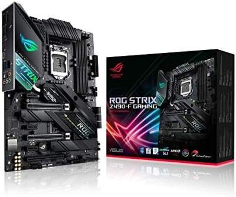
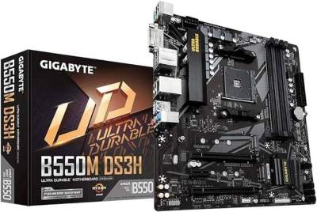

What is a motherboard?







Think of a motherboard like the nervous system of a computer. its a big circuit board that connexts all the parts of your computer together, like the CPU (the brain), RAM (the short-term memory), storage drives(where you keep your files), and other components like graphics cards, sound cards, and network cards. The mothercoard manages communication between all these parts, making sure they work together smoothly so your computer can run properly. Its like the central hub that keeps everything connected and working together harmoniously.
Motherboards come in various shapes and sizes, designed to fit different types of computers and serve different purposes. Here are some common types:
Socket Compatibility: Motherboards have a specific CPU socket where the processor is installed. Ensuring that the motherboard's socket matches the CPU socket is crucial. If they dint match, the CPU physically won't fit into the motherboard. For example, an LGA 1151 won't fit into an AM4 socket motherboard.
Chipset Compatibility: Motherboards are designed with specific shipsets that setermine their feature and compatibility with certain CPU fa,ilies. Choosing a motherboard with a chipest compatible with your CPU ensures that you can fully utilize the CPU's features. For examples, a mptherboards with an Intel Z-series chipset is sutiable for high-performance CPUs that support overclooking.